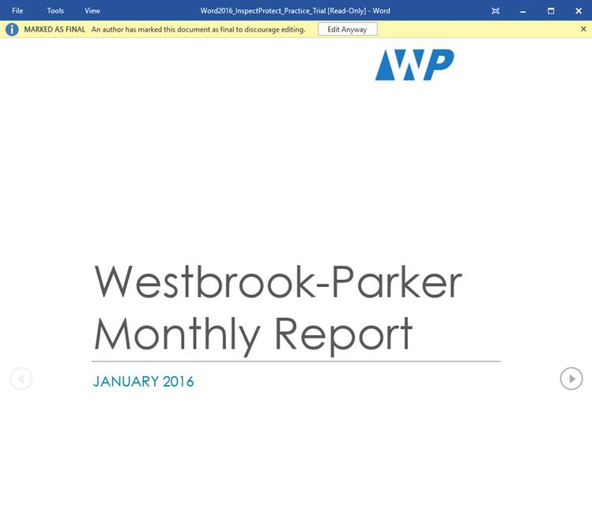

Sebelum membagikan dokumen, Anda harus memastikan bahwa dokumen tersebut tidak menyertakan informasi apa pun yang ingin Anda rahasiakan. Anda mungkin juga ingin mencegah orang lain mengedit file Anda. Untungnya, Word menyertakan beberapa alat untuk membantu memeriksa dan melindungi dokumen Anda.
Pemeriksa Dokumen
Setiap kali Anda membuat atau mengedit dokumen, informasi pribadi tertentu dapat ditambahkan ke file secara otomatis, seperti informasi tentang pembuat dokumen. Anda dapat menggunakan Pemeriksa Dokumen untuk menghapus jenis informasi ini sebelum berbagi dokumen dengan orang lain.
Karena beberapa perubahan mungkin bersifat permanen, sebaiknya gunakan Simpan Sebagai untuk membuat salinan cadangan dokumen Anda sebelum menggunakan Pemeriksa Dokumen.
Untuk menggunakan Pemeriksa Dokumen:
Klik tab File untuk menuju ke tampilan Backstage.
Dari panel Info, klik Periksa Masalah, lalu pilih Periksa Dokumen dari menu tarik-turun.
Pemeriksa Dokumen akan muncul. Centang atau hapus centang pada kotak, bergantung pada konten yang ingin Anda tinjau, lalu klik Inspect. Dalam contoh kita, kita akan membiarkan semuanya terpilih.

Hasil pemeriksaan akan menunjukkan tanda seru untuk setiap kategori yang menemukan data yang berpotensi sensitif, dan juga akan memiliki tombol Hapus Semua untuk setiap kategori tersebut. Klik Hapus Semua untuk menghapus data.

Setelah selesai, klik Tutup.
Melindungi dokumen Anda
Secara default, siapa pun yang memiliki akses ke dokumen Anda akan dapat membuka, menyalin, dan mengedit kontennya kecuali Anda melindunginya. Ada beberapa cara untuk melindungi dokumen, tergantung pada kebutuhan Anda.
Untuk melindungi dokumen Anda:
Klik tab File untuk menuju ke tampilan Backstage.
Dari panel Info, klik perintah Lindungi Dokumen.
Di menu tarik-turun, pilih opsi yang paling sesuai dengan kebutuhan Anda. Dalam contoh kita, kita akan memilih Mark as Final. Menandai dokumen Anda sebagai final adalah cara yang baik untuk mencegah orang lain mengedit file, sementara opsi lain memberi Anda lebih banyak kontrol jika Anda membutuhkannya.

Sebuah kotak dialog akan muncul meminta Anda untuk menyimpan. Klik Oke.

Kotak dialog lain akan muncul. Klik Oke.

Dokumen akan ditandai sebagai final. Setiap kali orang lain membuka file, bilah akan muncul di bagian atas untuk mencegah mereka mengedit dokumen.

Menandai dokumen sebagai final sebenarnya tidak akan mencegah orang lain untuk mengeditnya karena mereka dapat memilih Edit Anyway. Jika Anda ingin mencegah orang mengedit dokumen, Anda bisa menggunakan opsi Batasi Akses.
Tantangan!
Buka dokumen latihan kami. Jika Anda membuka dokumen latihan kami untuk mengikuti pelajaran, pastikan untuk mengunduh salinan baru dengan mengeklik tautan lagi.
Gunakan Pemeriksa Dokumen untuk memeriksa dan menghapus informasi tersembunyi apa pun.
Lindungi dokumen dengan menandainya sebagai final.
Setelah selesai, bagian atas halaman Anda akan terlihat seperti ini:
